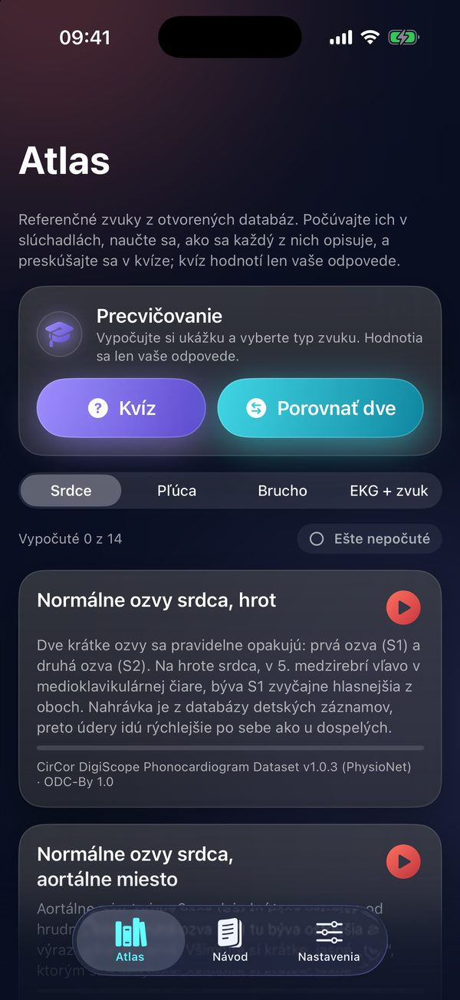
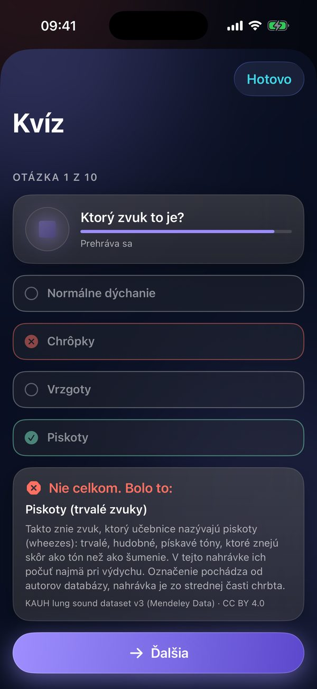
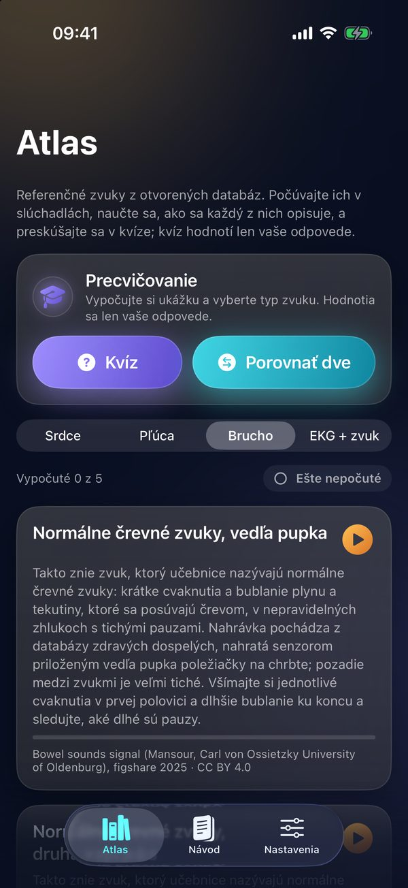
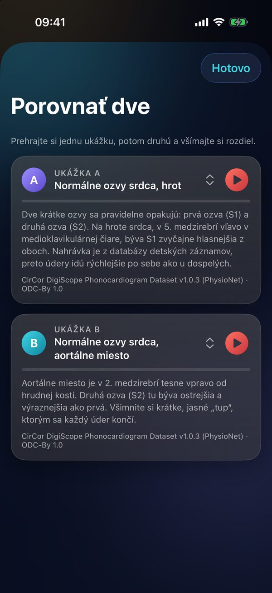
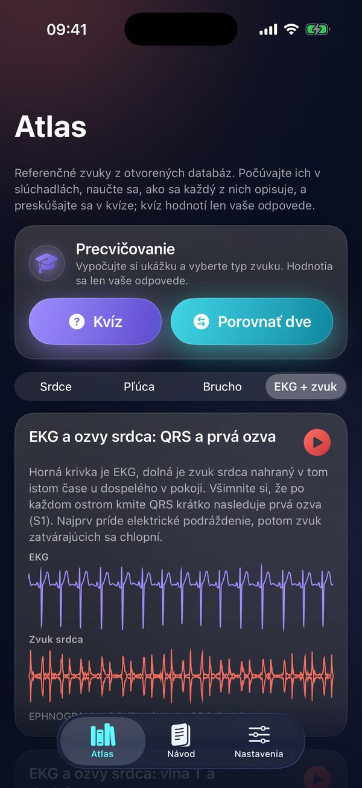
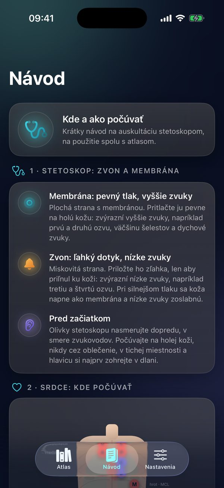

Učte sa auskultáciu
sluchom.
Ausculta je vzdelávací atlas na učenie sa auskultácie. Obsahuje 35 učebnicových ukážok zvukov srdca, pľúc a brucha z otvorených výskumných databáz, každú s popisom, zdrojom a licenciou, a 4 ukážky EKG so zvukom srdca. Precvičíte sa v kvíze a pri porovnaní dvoch ukážok, návod pripomenie, kde a ako počúvať stetoskopom. Appka nepoužíva mikrofón a nič nemeria. Na stiahnutie zadarmo.


Auskultácia sa učí ušami. Ukážku si najprv vypočujete s popisom, potom ju spoznávate bez neho a nakoniec ju odlíšite od podobnej. Ausculta vám ukážky pustí do slúchadiel kedykoľvek a toľkokrát, koľkokrát treba. A potom… …na praktickej výučbe so stetoskopom už viete, čo hľadáte.
Zručnosť, ktorá sa z výučby vytráca
Auskultácia ostáva prvou voľbou pri lôžku aj v teréne: je lacná, okamžitá a dostupná aj tam, kde echokardiografia nie je. Jej zvládnutie však vyžaduje veľa opakovaní a príležitostí počúvať pri lôžku ubúda. Ausculta vám pomôže precvičiť si sluch: atlas učebnicových ukážok z otvorených databáz, ktoré si môžete púšťať dookola, a kvíz, v ktorom zistíte, čo už spoznáte.
Rozpoznávanie je slabé a s rokmi výcviku sa takmer nelepší
Mangione a Nieman testovali 453 lekárov vo výcviku a 88 medikov na 12 srdcových nálezoch nahratých od pacientov: rezidenti internej a rodinnej medicíny ich rozpoznali v priemere 20 % a s rokom výcviku sa to takmer nemenilo. V druhej štúdii (656 lekárov vo výcviku a 194 medikov) rozpoznali rezidenti z 10 pľúcnych nálezov v priemere menej ako polovicu, opäť len s malým zlepšením počas výcviku. Neskorší test 860 účastníkov ukázal, že zručnosť vo vyšetrení srdca sa po 3. ročníku amerického štvorročného štúdia medicíny ďalej nezlepšuje, ani u rezidentov a lekárov z praxe; lepší boli len kardiológovia vo výcviku.
Opakovanie funguje
Barrett a kolegovia nechali 51 študentov 2. ročníka vypočuť si každý zo štyroch základných šelestov 500-krát: úspešnosť stúpla z 13,5 % na 85 % (so sledovaním) a z 20,9 % na 86,1 % (bez sledovania); kontrolná skupina sa významne nezlepšila (z 24 % na 32 %). Auskultácia je sčasti technická zručnosť, ktorá sa učí opakovaním. Na takéto opakovanie je Ausculta stavaná: atlas, ktorý si pustíte stokrát, a kvíz, ktorý vám ukáže, čo už spoznáte bez popisu.
Trend ide dole
Na jednom americkom akademickom pracovisku klesalo v rokoch 2008 až 2018 skóre študentov a lekárov vo výcviku v simulačnom teste auskultácie srdca o 0,15 bodu ročne (test so 16 zvukmi, priemer 7,7 bodu; 411 testov, z toho 85 % medici). Echokardiografia auskultáciu nenahradila, doplnila ju: ucho pri lôžku často pomôže rozhodnúť, koho a kedy poslať ďalej.
Zdroje: Mangione S, Nieman LZ. JAMA. 1997;278(9):717-722 (PMID 9286830). Mangione S, Nieman LZ. Am J Respir Crit Care Med. 1999;159(4):1119-1124 (doi:10.1164/ajrccm.159.4.9806083). Vukanovic-Criley JM a kol. Arch Intern Med. 2006;166(6):610-616 (doi:10.1001/archinte.166.6.610). Barrett MJ a kol. Chest. 2004;126(2):470-475 (doi:10.1378/chest.126.2.470). Zhang NS a kol. Am Heart J. 2025 (doi:10.1016/j.ahj.2025.03.006). Overené v PubMede 24. 10. 2026.
Ako sa s atlasom učiť
Atlas je postavený na opakovaní: počúvať, čítať popis, preskúšať sa a vracať sa k tomu, čo ešte nesedí.
Počúvajte s popisom
Každú ukážku si v slúchadlách vypočujte niekoľkokrát s otvoreným popisom, kým ju nespoznáte bez čítania. V slúchadlách počuť aj tiché zvuky, napríklad tretiu ozvu alebo jemné chrôpky; ukážky hrajú aj z reproduktora.
Preskúšajte sa v kvíze
Kvíz prehrá ukážku a vy vyberiete typ zvuku z najviac štyroch názvov. Hneď uvidíte, či ste trafili, a učebnicový popis ukážky. Hodnotia sa len vaše odpovede.
Porovnajte dve ukážky
Porovnať dve prehrá dve ukážky vedľa seba, napríklad normálne dýchanie a piskoty alebo jemné a hrubé chrôpky. Prehrajte jednu, potom druhú a všímajte si, čím sa líšia.
Vracajte sa k ukážkam
Prehľad „Vypočuté X z Y“ ukáže, koľko ukážok v sekcii ste už počuli, a filter „Ešte nepočuté“ vyberie tie, ktoré vám chýbajú. K ukážkam sa vracajte s odstupom dní: opakovanie je pri auskultácii to, čo funguje.




Čo Ausculta ponúka
Atlas ukážok
35 učebnicových ukážok zvukov srdca, pľúc a brucha z otvorených výskumných databáz (PhysioNet a ďalšie; jedna ukážka črevných zvukov je zo zvukovej knižnice freesound.org). Pri každej je popis, zdroj a licencia. Prehrávajú sa do slúchadiel alebo z reproduktora.
Srdce, pľúca a brucho
Normálne ozvy z rôznych miest posluchu, systolické a diastolické šelesty, tretia a štvrtá ozva; vezikulárne a tracheálne dýchanie, piskoty, vrzgoty, chrôpky a stridor; normálne črevné zvuky a borborygmy. Popis vysvetlí, čo v ukážke počuť.
Kvíz a porovnanie
Kvíz prehrá ukážku a vy vyberiete typ zvuku; hneď uvidíte učebnicový popis. Hodnotia sa len vaše odpovede. Porovnať dve prehrá dve ukážky vedľa seba a appka si pamätá, ktoré ukážky ste už počuli.
EKG a zvuk srdca
4 ukážky z otvorenej databázy, v ktorej sa EKG a zvuk srdca nahrávali naraz. Vidíte ich pod sebou na jednej časovej osi a pri prehrávaní sledujete, ako po elektrickom podráždení prichádzajú ozvy. V ukážkach sa nič nemeria.
Návod pre stetoskop
Kde a ako počúvať klasickým stetoskopom: zvon a membrána, tlak, miesta auskultácie srdca a pľúc, štyri kvadranty brucha a ako dlho počúvať. Ako podklad k atlasu.
Súkromie
Appka nepoužíva mikrofón, nemá účet ani server, nemá analytiku a nezbiera žiadne údaje. Nákupy rieši App Store.
Zadarmo a Ausculta Pro
Ausculta je na stiahnutie zadarmo. Ausculta Pro je jednorazový nákup v aplikácii, nie predplatné.
Zadarmo
12 z 35 zvukových ukážok atlasu, kvíz a Porovnať dve z voľných ukážok, všetky 4 ukážky EKG so zvukom srdca, prehľad vypočutých ukážok a celý návod.
Ausculta Pro
Odomkne zvyšných 23 ukážok atlasu, ktoré sa potom objavia aj v kvíze a v Porovnať dve. Jednorazový nákup, cenu v miestnej mene ukáže App Store.
Dobrovoľný príspevok na vývoj a údržbu (Podporiť vývoj) nič neodomyká. Ak chcete, podporíte ním ďalšiu prácu na Ausculte.
Kto za tým stojí
MUDr. Ján Šikuta, PhD.
Autor myšlienky a výučbového konceptu: atlas, kvíz a návod.
Breathune
Dizajn a vývoj aplikácie, príprava ukážok atlasu.
Pre koho
Pre študentov medicíny a ošetrovateľstva a pre zvedavých, ktorí sa chcú naučiť počúvať.
Spolupráca na výučbe auskultácie alebo výbere ukážok: admin@breathune.eu